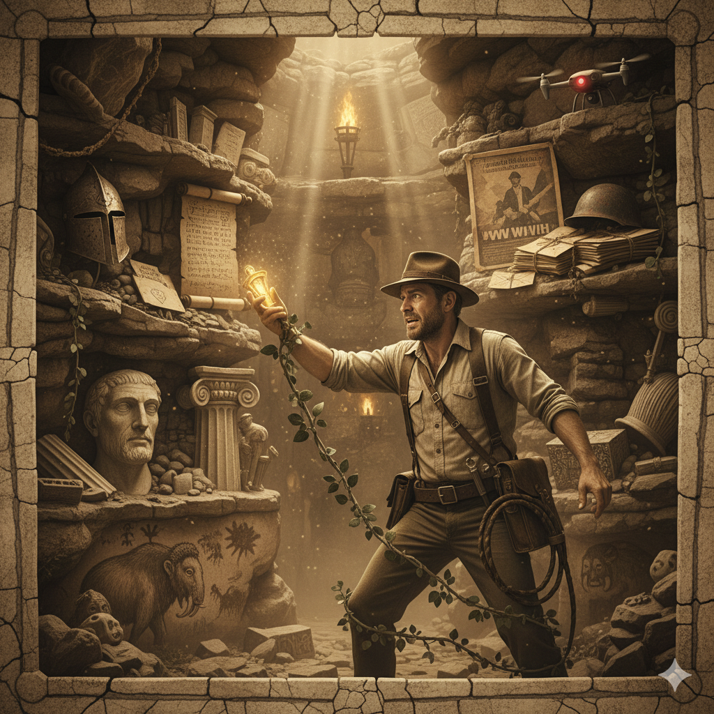
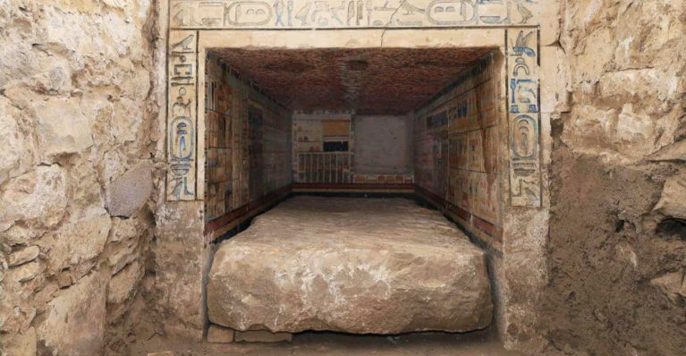
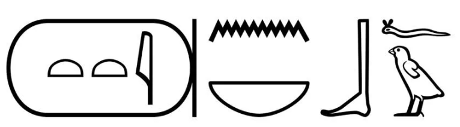
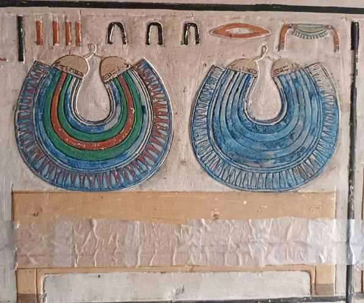
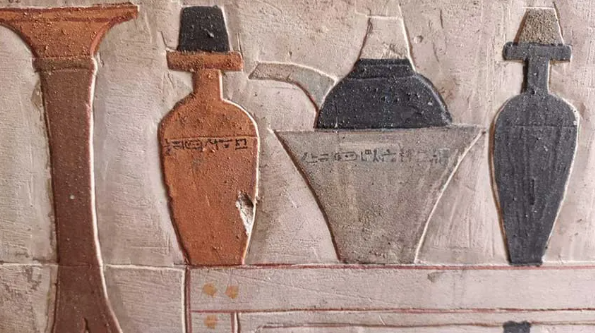
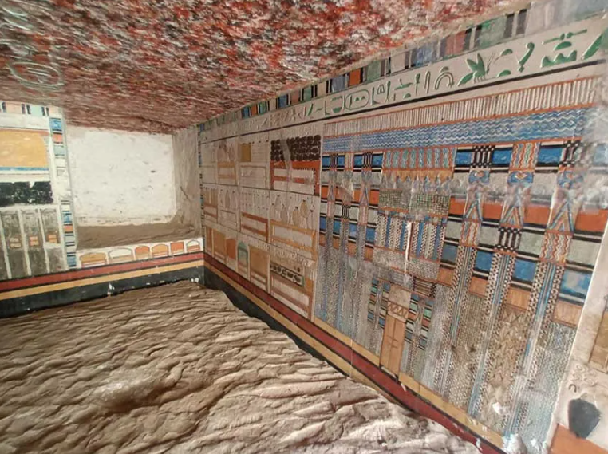

L'entrée de la tombe de Tétinébefou à Saqqarah
©Ministère égyptien du Tourisme et des Antiquités
En fouillant la nécropole du pharaon Pépi Ier à Saqqarah en Égypte, des archéologues franco-suisses ont découvert une magnifique tombe vieille de plus de 4 000 ans. Ce mastaba appartenait à un médecin qui aurait soigné plusieurs rois de l’Ancien Empire.
Dans un communiqué publié sur Facebook le 6 janvier 2025, le ministère égyptien du Tourisme et des Antiquités a annoncé une surprenante découverte sur le site archéologique de Saqqarah, situé à 30 km au sud du Caire. Une équipe franco-suisse conduite par Philippe Collombert a mis au jour la tombe d’un important personnage de l’entourage royal. Ce haut fonctionnaire, nommé Tétinébefou, remplissait les prestigieuses fonctions de « médecin en chef du palais », de « directeur des plantes médicinales » et de « dentiste en chef ». Selon les chercheurs, il aurait été au service de plusieurs pharaons de la fin de l’Ancien Empire, peut-être Pépi II (2246-2152 av. J.-C.) et certains de ses successeurs. L’exploration du mastaba a apporté son lot de surprises aux égyptologues. Une chambre funéraire richement peinte a été révélée. Ses murs étaient encore décorés de délicats hiéroglyphes et de splendides représentations colorées.
Une tombe appartenant à un médecin au service des pharaons de l’Ancien Empire
La tombe fouillée en 2024 par la Mission archéologique franco-suisse de Saqqâra (MAFS) est une sépulture typique de la VIe dynastie (Ancien Empire). Située devant le mastaba d’Ouni à Saqqarah, il s’agit d’une « tombe en four » édifiée en briques crues et comportant des murs de calcaire. Ces monuments, largement pillés au fil des siècles, ne contiennent que peu matériel funéraire et ne sont que très rarement décorés.

Nom hiéroglyphique du haut fonctionnaire Tétinébefou dont la tombe a été découverte dans la nécropole de Saqqarah. © Laurie Madiot
La surprise fut donc grande lorsque les chercheurs ont découvert une sublime stèle fausse-porte au nom du médecin royal Tétinébefou . Pour rappel, cette stèle en forme de porte permettait au défunt de communiquer avec les vivants et de prendre symboliquement possession des offrandes déposées devant celle-ci. Le dégagement du puits menant à la chambre funéraire a confirmé l’identité du propriétaire de la tombe. Un linteau en calcaire décoré de délicats hiéroglyphes mentionnant le nom et les titres de Tétinébefou est apparu. Cette tombe n’avait toutefois pas terminé de révéler ses secrets !
Des titres prestigieux témoignant de l’importance de ce haut fonctionnaire égyptien
La Mission archéologique franco-suisse de Saqqâra a également découvert un sarcophage en pierre inscrit d’un texte détaillant la titulature du défunt. Ce haut personnage a rempli de prestigieuses fonctions auprès des pharaons de la fin de l’Ancien Empire. Il fut « médecin en chef du palais », « dentiste en chef » et « directeur des plantes médicinales ». Ces deux derniers titres ne sont que très rarement attestés dans les sources écrites.

Détail du décor intérieur de la tombe de Tétinébefou à Saqqarah ©Ministère égyptien du Tourisme et des Antiquités
Tétinébefou était aussi « prêtre et conjurateur de la déesse Serqet », une divinité qui protégeait les Égyptiens des piqûres de scorpions et autres animaux dangereux. D’après Philippe Collombert, responsable de la fouille, ce personnage se trouvait au sommet de sa profession : « Il était certainement le médecin principal de la cour royale et il aurait donc soigné le pharaon lui-même ». Il était également « un spécialiste des morsures venimeuses ». Mais quels pharaons Tétinébefou a-t-il servis ? L’égyptologue pense qu’il s’agirait peut-être de Pépi II ou d’un ou plusieurs de ses successeurs.

Détail du décor intérieur de la tombe de Tétinébefou à Saqqarah ©Ministère égyptien du Tourisme et des Antiquités
Une chambre funéraire ornée de représentations vibrantes et colorées
La fouille de ce mastaba de Saqqarah a révélé de magnifiques représentations murales. Les parois de la chambre funéraire étaient en effet entièrement décorées de « peintures aux couleurs vives et fraîches ». Ces ornementations ont presque fait oublier aux archéologues qu’elle datait de plus de 4 000 ans ! Des hiéroglyphes colorés en turquoise, des vases, des jarres et des motifs reproduisant une façade de palais ont été mis au jour. La tombe a été saccagée par les pilleurs. Aucune momie n’a donc été découverte. Le trousseau funéraire du défunt a disparu et il n’en subsiste que de minuscules fragments.

Vue de l’intérieur de la tombe de Tétinébefou dans la nécropole de Saqqarah. ©Ministère égyptien du Tourisme et des Antiquités
Saqqarah : une nécropole renfermant encore de nombreux mystères
Saqqarah n’a pas terminé de surprendre les égyptologues et le grand public. Le 7 janvier 2025, le ministère égyptien du Tourisme et des Antiquités a publié un nouveau post sur Facebook pour partager une autre découverte réalisée sur le site. Quatre tombes datées de la fin de la IIe dynastie et du début de la IIIe dynastie (Ancien Empire) ont été dégagées par une mission archéologique égypto-japonaise.
Une dizaine de sépultures de la XVIIIe dynastie (Nouvel Empire) ont également été mises au jour. Les fouilleurs ont enfin exhumé des blocs de calcaire, plusieurs récipients, des restes humains momifiés, des fragments de cercueils en bois et divers objets funéraires. Cette découverte amène les spécialistes à reconsidérer les limites de la nécropole de Saqqarah. Elle révèle que ce vaste cimetière, occupé tout au long de l’histoire égyptienne, s’étendait bien plus au nord que ce que les chercheurs pensaient…